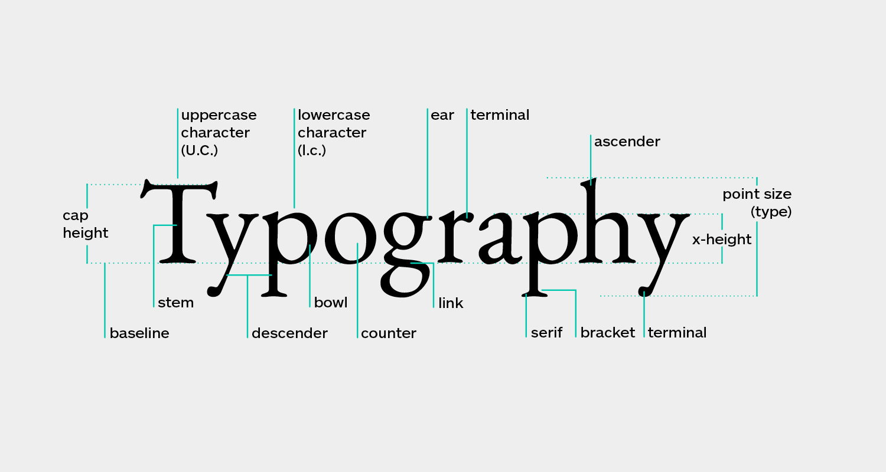

UI/UX
UI design stands for “user interface.” The user interface is the graphical layout of an application. It consists of the buttons users click on, the text they read, the images, sliders, text entry fields, and all the other items the user interacts with. This includes screen layout, transitions, interface animations and every single micro-interaction. Any visual element, interaction,or animation must be designed.
UX stands for “user experience.” A user’s experience of the app is determined by how they interact with it. Is the experience smooth and intuitive or clunky and confusing? Does navigating the app feel logical or does it feel arbitrary? Does interacting with the app give people the sense that they’re efficiently accomplishing the tasks they set out to achieve or does it feel like a struggle? User experience is determined by how easy or difficult it is to interact with the user interface elements that the UI designers have created.
TYPOGRAPHY

Typography is not just about getting the right font to comp
lement the design.It is in fact the backbone of web-design, an intrusive element for giving voice to the content. It is not readability alone, it is an immersing experience, of relating to letters,words and a lot more. Here’s a list of resources to help you understand the theory and practicality of typographyfor introducing the element of style to the content.
COLOR COMBINATION
Color theory is both the science and art of using color. It explains how humans perceive color; and the visual effects of how colors mix, match or contrast with each other. Color theory also involves the messages colors communicate; and the methods used to replicate color.
In color theory, colors are organized on a color wheel and grouped into 3 categories: primary colors, secondary colors and tertiary colors.
Have a purpose :
Clearly define your website’s purpose before you start the design process: the why behind your site should be the driving force when deciding what featu
res it needs.Know what your website is designed to accomplish for your users, and design and optimize your site around that idea. Prioritizing the why helps you create a website that attracts traffic and retains users by generating customer delight.
A smooth user journey :
Your website should make visitors’ lives easier, not more complicated. Users will lose interest if they can’t navigate intuitively when they land on a page, which is why you need to make the user journey clear and easy to follow. Design straightforward, streamlined navigation menus to enhance the user experience, which will help you decrease your bounce rate and boost your click-through rate.
Keep it simple :
Less is more when it comes to website design: make sure you don’t cram too many visual elements onto one page and stick to a uniform color scheme and one or two different fonts. When your website has a streamlined design, it’s easier for users to stay on task and accomplish what they came there to do.To prioritize simple, functional design, ask yourself what purpose every element serves;